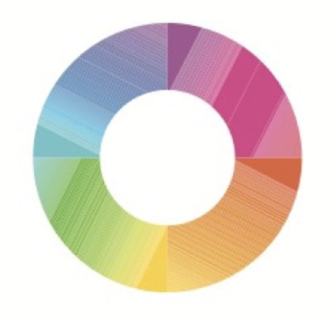
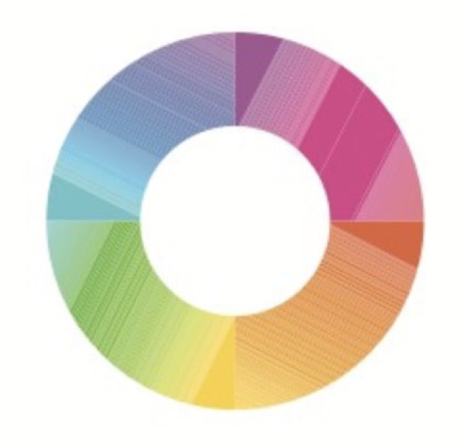

세진이 보아라,
형이 생활코딩을 보고 독학하여, 바탕화면에 폴더 하나를 만들고, 아톰이라는 에디터를 다운받아 html 파일을 만들었다.
그 html파일 안에다가 너 보라고 이렇게 자랑글을 쓰고 있다.
그리고 지금은 html 문법을 배우고 있다.
태그라는데 그게 언어 문법 중에 제일 쉽다고 하는데, 사실이냐?
지금 태그 배우고 있는데, 내가 꺽쇠 u를 해서 웹페이지에 쉽게 밑줄을 띄우는 건 다른 사람이 이미 고생을 많이 해서 구현해놓은 것 때문이라는데, 이것도 사실이냐?
꺽쇠를 넣는걸 태그라고 한다고 한다. 앞에 꺽쇠를 여는 꺽쇠, 뒤에 꺽쇠를 닫는 꺽쇠고 슬래시를 넣은 다고 한댄다.
html이라는 언어를 만들 때, 만드는 사람들이 일상생활에서 편하게 쓰는 용어로 표현을 정했다고 한댄다.
아님 쓰는 사람들이 모르니까.
-
내가 봐도 어디서 부터 모르겠는지도 모르겠는, 그냥 아예 모르겠는 상황에서 -> 무엇을 모르겠는지는 아는 상태가 된다. 태그를 배웠으니까.
이젠 뭘 모르는지 알아서 검색도 할 수 있다.
html h1 tag라고 구글에 치면 된다.
This is heading 1
This is heading 2
This is heading 3
This is heading 4
This is heading 5
This is heading 6
h1 - 6 태그
strong
u
br
p
p 태그는 단락, br은 줄 바꿈, 근데 br은 여러번 쓰는 만큼 줄간격이 한칸씩 변하지만, p는 단락과 단락 사이 간격이 정해져 있음
이때 단락과 단락 사이의 간격 조절을 위해 css라는 기술이 적용됨.
html은 정보를 표현=생성=만들어준다, css는 정보를 꾸며줌. 커스토마이즈 느낌?
여기서 중요한것은, css의 존재가 없었을 땐, 단락의 간격을 조정하는 걸로 br 태그가 더 낫다고 볼 수 있지만, css로 간격 사이를 원하는 만큼 조정할 수 있으므로
p 태그가 더 좋은 선택이라는 걸 이해하는 것.
지금까지 배워본 html만으로도 여러 의미있는 걸 깨달을 수 있다.
일반적으로 카페나, 블로그 쓰는 에디터는 다 html을 더 쉽게, 한마디로 비개발자도 쉽게 쓸 수 있게 만들어놓은 툴이였던 것
헤딩 크기, 폰트 크기, 강조들 버튼을 눌러서 했지만, 이를 html로 보기 했을때 html 코드들로 나타난다.
예를 들면, 같은 단어 *현준이 바보*를 하나는 제목2 서식을 적용하고, 하나는 폰트 22에 볼드체를 적용했을때 결과적으로 보이는 것은 비슷할 수 있다.
아래 와 같이 보이지만, 사실 html 코드로 까놓고보면 이게 헤딩으로 설정된 건지, 그냥 폰트 사이즈만 키운건지를 알 수 있다.
이게 무슨 의미냐면, 같은 단어도 태그가 h이냐 아니면 걍 폰트 사이즈 키운거냐를 검색시 h는 헤딩의 의미를 포함한 거니까 더 먼저 띄워준다.
현준이 바보
현준이 바보 html 태그로 폰트 사이즈는 1 - 7 까지 밖에 안되넹.
현준이바보 똥개
 태그 만으로 충분히 정보를 표현하기 어려울 때, 속성이라는 문법도 쓰인다.
태그 = tag
속성 = attribute
속성이라는 문법이 추가되면서 더 정보를 풍부하게 표현할 수 있게됨.

태그 만으로 충분히 정보를 표현하기 어려울 때, 속성이라는 문법도 쓰인다.
태그 = tag
속성 = attribute
속성이라는 문법이 추가되면서 더 정보를 풍부하게 표현할 수 있게됨.
